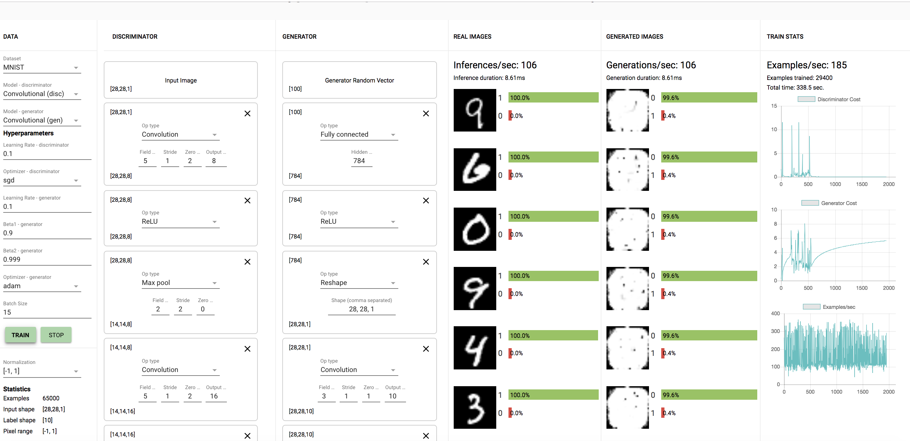

1.2.1 Why does the Generator need the second FC layer to transform the shape [256] output of the first FC layer? Hint: Can a Reshape layer reshape [600] to [20,20,2]? How about [800] to [20,10,4]?
The generator needs the second FC layer to transform the shape 256 output of the first FC layer to the final dimensions of [28, 28, 1] as the number of units needed for this layer is 28*28*1 = 784, which is the output of the 2nd FC layer.
A reshape layer cannot reshape 600 to [20,20,2], as 20*20*2=800 and not 600. A reshape layer however can go from 800 to [20,10,4] as 20*10*4 = 800.
1.2.2 Submit screenshots of some results (generated examples, discriminator predictions on real and fake data, and learning curves as in the plots above).
Here is a screen shot of the generated examples after approximately 10-15 minutes of training, along with the learning curves. The curves on the right show that as we train for longer amounts of time, the cost of the discriminator increases as the generator is able to create pictures that are able to seem more like the real images to fool the discriminator. This decreases the cost of the generator as shown.
1.2.3 Can you say anything about the performance of the system's default fully connected model versus the performance of the convolutional model?
The CNN model does better than the FC connected model, which makes sense as CNN's are better at figuring out details in images.
Submit screenshots of your results with at least 3 different configurations (architecture, learning rate, optimizers). At a minimum, try: the provided architecture with generator learning rate greater than discriminator learning rate, same architecture with discriminator learning rate greater than generator learning rate, and one other variant. Feel free to experiment with other layer types as well. No need for all your results to look great. Keep in mind that you'll probably need to run each of your experiments for several minutes or longer, so don't feel the need to got overboard trying lots of variations. Here are a couple of experiments that I tried:
The first one was with the CNN model with a learning rate of the discriminator as 0.1 as shown. Here is the model after 10 minutes:
The second experiment I tried was with the generator learning rate of 0.1 instead (greater than discriminator).

The final experiment was with the discriminator and generator learning rates both as 0.1.

1.3.1. Were any of your models able to generate any reasonable MNIST digits? If so, were any of your models able to generate all of the MNIST digits (0-9)? Did any of your models get stuck at some point generating one or a few digits only (i.e. mode-collapse)?
I was unable to generate reasonable MNISTs digits for the second model with generator learning rate = 0.1. From the models I tried, none were able to generate all the MNIST digits. The model with generator learning rate = 0.1 only generated only a few digits (8's, 3's, and 9's) as I saw. The first and third model did not do as well.
1.3.2 What happened when the discriminator learning rate was greater than the generator learning rate? What about when the generator learning rate was greater than the discriminator learning rate?
When the discriminator learning rate is higher, it takes much longer to train and the generator does not create as good images. However when the generator learning rate is higher, performance is better.
1.3.3 Try building configurations for CIFAR. (This will require a miinute or two to loadFirst, try running with only FC layers for ~15 minutes and document your results.
Here is a basic model for CIFAR with the FC layer. This took longer than 15 minutes to train, and still did not perform very well. This is probably due to the fact that the CIFAR dataset is much more complex as it has more color channels (3).